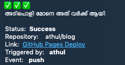

Get GitHub action Notification in Telegram ⚡️⚡️
The Story Behind
So, these few days I’ve been working on Shelby a lot. For handling the releases section I used Travis CI and Travis really does a good job at it.
The only thing about travis is that it takes time to complete the build and deploy cycle. Starting with the docker container to the deployment. We’d have to wait in the build page for a few minutes till the build&deploy is completed. That’s just waste of productive time I’d say. Maybe in that time we could do something else like searhing stackoverflow for a previous error or read the docs to find out how it works better. And to check if the build failed or succeded, I’d have to go back to Travis' page and meh, it’s just lazy.
So I googled for any solutions to get me notified. I found this medium article where the author made a Shell Script to use it with Travis and sends you a notification on the build’s status in Telegram using a Bot. I didn’t knew that a Shell Script is enough for a telegram bot to work.
I loved the idea, and copied the script and used it with some changes in the output message. It was fast alright. As soon as the build completed I’d get a Message in Telegram regarding the status.
The Story Now
I tweaked the same script to use it along GitHub Actions and boy, its fast alright.
The solution I used before this was a GitHub Action I made for notifying meon Builds using GitHub actions. It was called Statusoli.
I made it using docker actions template and Go. I made different versions for it in different branches of the Repo. The star branch had an output message for notifying about new stars in the repo. The notify branch is for notifying about any new pull request or issues opened,closed,assigned or reopened. The master branch is just for sending a message regarding only the build status.
And all of it included a Malayalam Text, I made it just for fun🤷♂️.
Now the shell script for GitHub Actions Telegram Notify is a small one, You can find all of my scripts here.
You just have to add these lines to the action
- name: Notifier
env:
TELEGRAM_CHAT_ID: ${{ secrets.TELEGRAM_CHAT_ID}}
TELEGRAM_TOKEN: ${{secrets.TELEGRAM_TOKEN }}
INPUT_STATUS: ${{ job.status }}
run: sh -c "$(curl -sL https://raw.githubusercontent.com/athul/autom/master/tg_gh_action_noti.sh)"
The
TELEGRAM_TOKENand theTELEGRAM_CHAT_IDshould be added to the repository secrets in the repository settings. Be in mind that these Secret’s Name is case sensitive.
- Here the
TELEGRAM_CHAT_IDis the chat id you want the bot to send the messages to. You can find your chat id by speaking tojsondumpbotin telegram. - The
TELEGRAM_TOKENis your Telegram bot’s API Key. You can create a new bot by talking tobotfatherbot in Telegram - The
INPUT_STATUSis something the actions have, you don’t have to pass anything to it. The Shell script mostly uses Action’s Environment Variables. So you’d have to define the trigger on which the action should be done. Check this Guide for references. And
Screenshots: 1. Shell Script, 2. Statuoli


Happy New Year Ya’ll